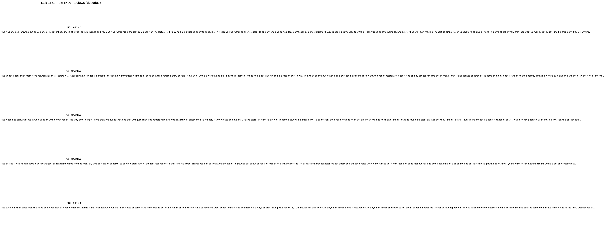
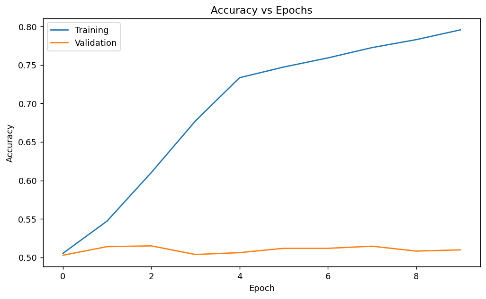
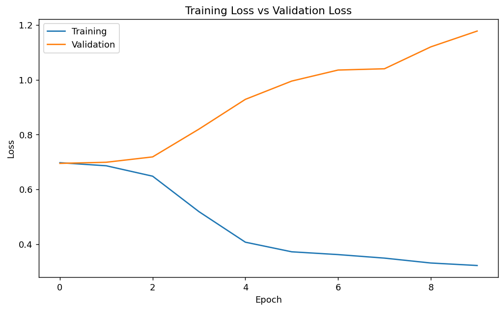
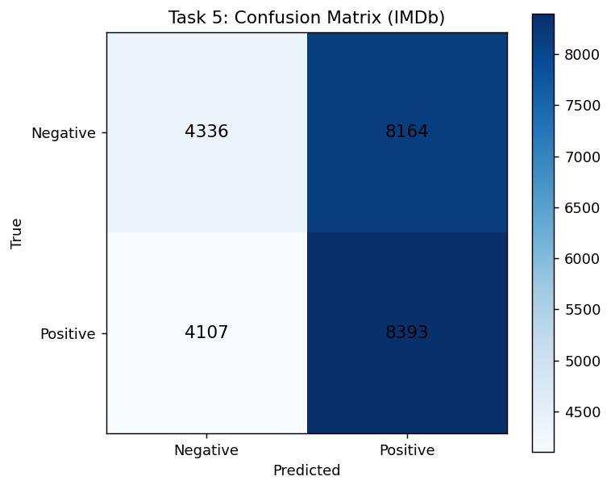
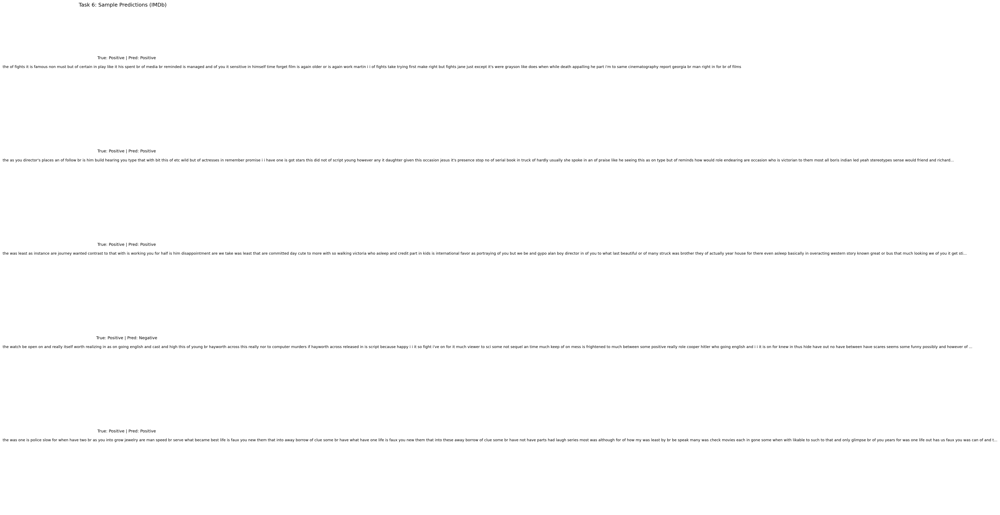

This lab implements a recurrent neural network for text classification to predict sentiment (positive vs. negative) on IMDb movie reviews using a SimpleRNN model in TensorFlow/Keras. The report includes dataset details, preprocessing, model design, training, evaluation, visualizations, and sample predictions.
| Item | Details |
|---|---|
| Dataset source | tf.keras.datasets.imdb (IMDb movie reviews) |
| Input format | Variable-length sequences of integer word IDs (tokenized text) |
| Output format |
Binary labels: 0 = Negative, 1 =
Positive
|
| Train/Test split | Provided by the dataset loader as separate training and testing sets |

MAX_FEATURES = 10000MAX_LEN = 200,
padding="post", truncating="post"
0/1) for
binary_crossentropy
MAX_FEATURES = 10000 MAX_LEN = 200 EMBEDDING_DIM = 64 RNN_UNITS = 64 BATCH_SIZE = 64 EPOCHS = 10
(x_train_raw, y_train), (x_test_raw, y_test) = tf.keras.datasets.imdb.load_data(num_words=10000)
x_train = tf.keras.preprocessing.sequence.pad_sequences(
x_train_raw, maxlen=200, padding="post", truncating="post"
)
x_test = tf.keras.preprocessing.sequence.pad_sequences(
x_test_raw, maxlen=200, padding="post", truncating="post"
)
The model architecture is Embedding → SimpleRNN → Dense(sigmoid). The embedding layer learns vector representations for words, the SimpleRNN processes the sequence, and the final dense layer outputs a probability for positive sentiment.
model = tf.keras.Sequential([
tf.keras.layers.Embedding(10000, 64, input_length=200),
tf.keras.layers.SimpleRNN(64),
tf.keras.layers.Dense(1, activation="sigmoid"),
])
model.compile(optimizer="adam", loss="binary_crossentropy", metrics=["accuracy"])
x_train, y_trainx_test, y_testvalidation_split = 0.2
history = model.fit(
x_train,
y_train,
batch_size=64,
epochs=10,
validation_split=0.2,
verbose=1,
)
| Metric (Final Epoch) | Value |
|---|---|
| Training accuracy | 0.7957 |
| Validation accuracy | 0.5098 |
| Training loss | 0.3217 |
| Validation loss | 1.1780 |


| Metric | Value |
|---|---|
| Test accuracy | 0.5092 |
| Test loss | 1.1529 |
test_loss, test_acc = model.evaluate(x_test, y_test, verbose=1)
probs = model.predict(x_test, verbose=0).reshape(-1)
y_pred = (probs >= 0.5).astype("float32")

Sentiment labels: 0=Negative, 1=Positive Negative: precision=0.5136, recall=0.3469, f1=0.4141 Positive: precision=0.5069, recall=0.6714, f1=0.5777 Confusion Matrix [[TN, FP],[FN, TP]]: [[4336, 8164], [4107, 8393]]

A SimpleRNN reads the review sequence step-by-step and updates a hidden state that summarizes the words seen so far. After the final time step, the last hidden state is passed to a sigmoid layer to produce the probability of positive sentiment. SimpleRNN is suitable here as a straightforward baseline for sequential text because it captures word order with minimal complexity. In training, the model reached 0.7957 accuracy, but validation accuracy stayed near 0.5098, indicating weak generalization. On the test set, it achieved 0.5092 accuracy with 1.1529 loss, which is close to random guessing for a balanced binary task. The confusion matrix and precision/recall values suggest the model predicts positives more often and makes many mistakes, so a stronger recurrent unit (LSTM/GRU) or regularization/tuning would likely be needed.
n this lab, I learned how IMDb reviews are represented as token IDs and why padding/truncation to a fixed length is required for batch training. I also learned how an Embedding layer and SimpleRNN work together to process text sequentially and output a sentiment probability. By comparing training vs validation curves, I understood how to identify generalization issues when training improves but validation does not. The confusion matrix and precision/recall helped me evaluate performance beyond a single accuracy number. Overall, this lab improved my understanding of the end-to-end workflow for text classification with RNNs, from preprocessing to evaluation.
https://www.tensorflow.org/api_docs/python/tf/keras/datasets/imdb
https://www.imdb.com/